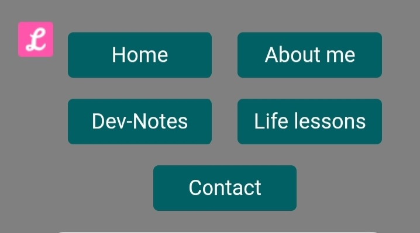
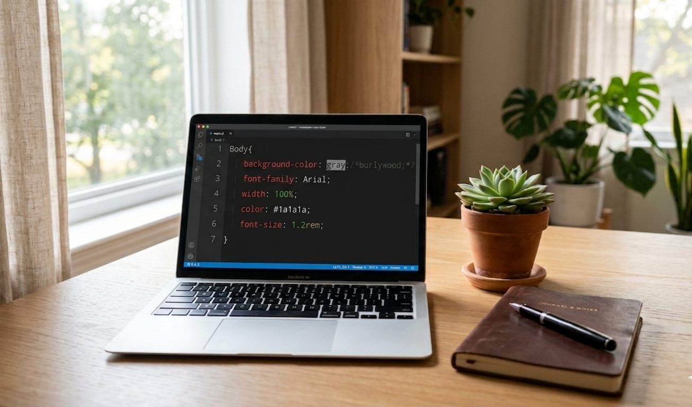
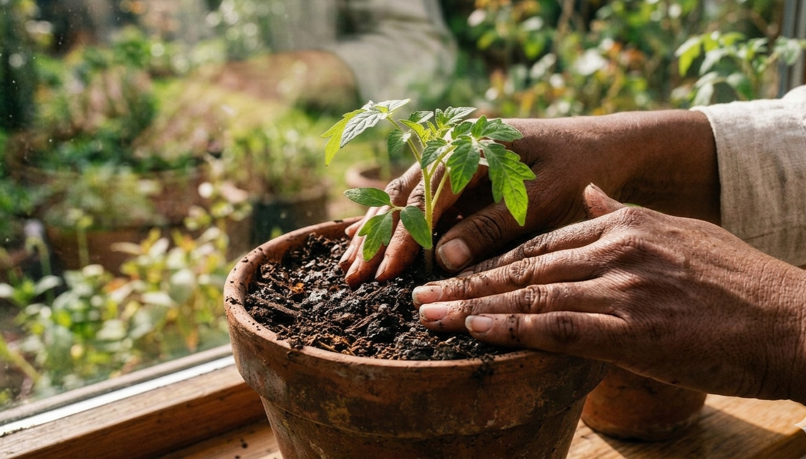

Dev-Notes

Fixing My Mobile Navigation Layout
When I viewed my site on mobile, the navigation buttons were stacking vertically and taking up too much space. It made the page feel stretched and inefficient.
continue here
This is a space where I document growth in code and in life.
As I transition into frontend development, I share lessons from building projects, debugging challenges, and understanding how the web works. Alongside that, I reflect on mindset, discipline, and the everyday experiences that shape who I’m becoming.
This blog isn’t just about learning to code. It’s about learning in all ramifications.

Fixing My Mobile Navigation Layout
When I viewed my site on mobile, the navigation buttons were stacking vertically and taking up too much space. It made the page feel stretched and inefficient.
continue here
The Gap Between Wanting and Doing
For a long time, I thought “understanding” was the same as “progress.” I read articles about frontend development. I watched tutorials. I saved bookmarks. I felt productive.But nothing was built.
continue hereWhen I viewed my site on mobile, the navigation buttons were stacking vertically and taking up too much space. It made the page feel stretched and inefficient.
My first attempt was to use `display: flex` with `flex-wrap` to force two buttons per row. In theory it should have worked, but the alignment kept breaking and the layout didn’t behave consistently across screen sizes.
The solution ended up being simpler. I removed flex on mobile and used `display: inline-block` with `width: 42%`. That forced two buttons per row naturally and reduced the vertical space significantly. Sometimes the cleanest fix isn’t the most complex one, it’s the one that behaves predictably.
BackFor a long time, I thought “understanding” was the same as “progress.” I read articles about frontend development. I watched tutorials. I saved bookmarks. I felt productive.
But nothing was built.
The shift happened when I stopped consuming and started typing. My first lines of codes were messy. My layouts broke on mobile. I spent an hour fighting a button that wouldn’t move.
That frustration? That was the real learning.
Real fulfillment didn’t come from knowing what a developer does. It came from devising a way to be one - opening the editor, making the mistake, fixing it, and doing it again.
If you’re waiting until you feel “ready” to start… you’re waiting too long. Start messy. Start small. Just start.
Back